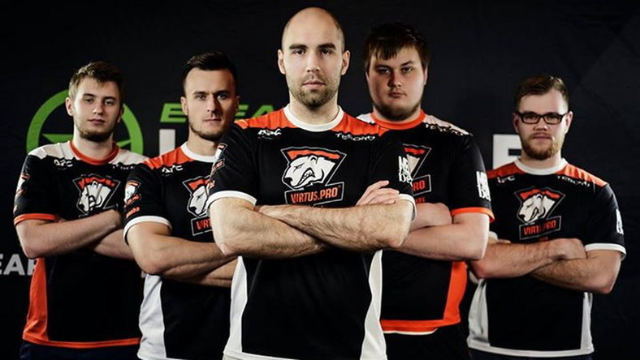

Virtus.Pro
Virtus.pro jest rosyjską organizacją e-sportową, która działa nie tylko w CS:GO, ale w wielu innych grach takich jak League of Legends czy World of Tanks. Co do historii drużyny w CS:GO to sięga ona 2012 roku, gdzie w skład wchodzili: kUcheR, ANGE1, AdreN, evil oraz craft1k. Następnie craft1k oraz evil opuścili drużynę, a na ich miejsce dołączyli Dosia i Fox. W roku 2013 AdreN'a zastąpił GuardiaN, a następnie organizacja straciła swój skład. W 2014 roku, a dokładniej w styczyniu został ogłoszony nowy, polski już skład, w który wchodzili: Jarosław "pasha" Jarząbkowski, Paweł "byali" Bieliński, Janusz "Snax" Pogorzelski, Wiktor "TaZ" Wojtas i Filip "NEO" Kubski. Ich jednym z pierwszych, większych sukcesów na scenie profesjonalnej pod nazwą Virtus.pro było zwycięstwo w Katowicach, gdzie pokonali Ninjas in Pijamas i zgarnęli $100 000. Następnie na początku roku 2015 jako trener dołączył Jakub "kuben" Gurczyński. Następnie z droższych pul, jakie zgarnęli była wygrana na ESL ESEA Pro League Invitational i zgarnięcie $100 000. Następnie zbyt wiele się nie wydarzyło. Wygrana wielu turnieji np. ELEAGUE Season 1 w Atlancie i zgarnięcie $400 000, 2 miejsce na EPICENTER 2016 w Moskwie i zdobycie $100 000, 3 miejsce na World Electronic Sports Games 2016 i wygrana $200 000, 2 miejsce na ELEAGUE Major 2017 w Atlancie i zgarnięcie $150 000 czy też wygrana na DreamHack Masters Las Vegas 2017 i zdobycie $200 000. Niestety w między czasie ich gra nie poszła strasznie do przodu. Dużo turniejów przegrali przez dość głupie błędy, ale nie oznacza to, że grają bardzo źle. Po prostu już zaczynają lekko odstawać od czołówki, ale w dalszym ciągu potrafią wygrać niektóre turnieje.